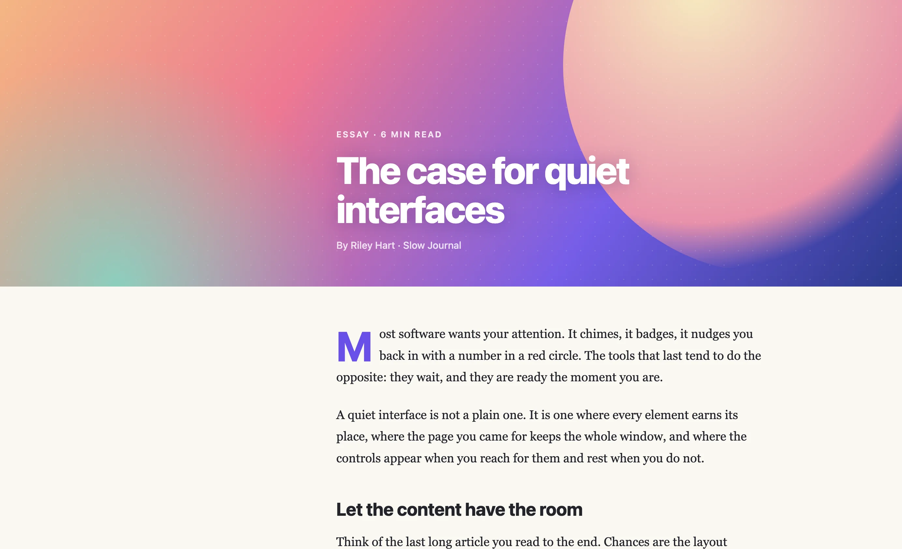
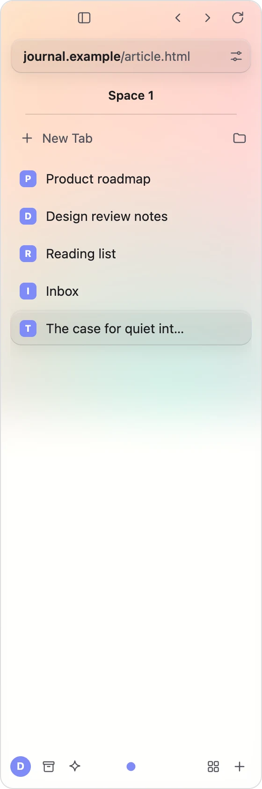
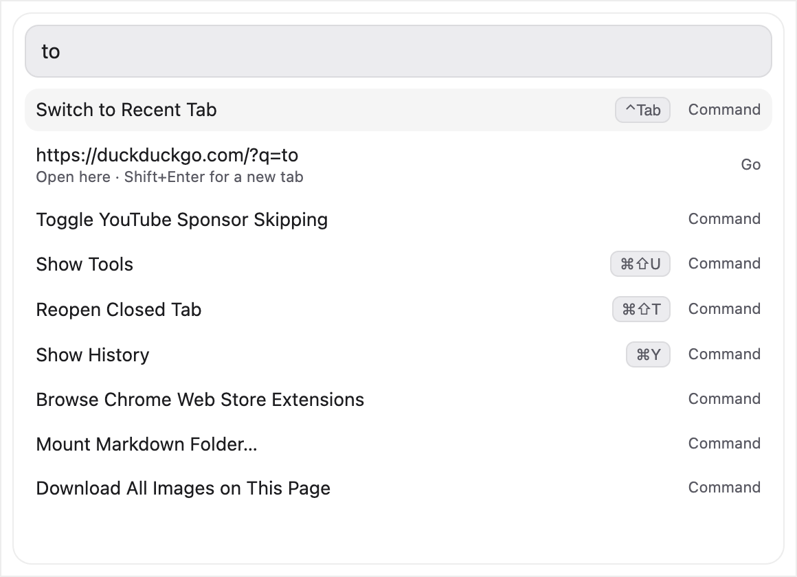

The page comes first
A bezel-less window with no toolbar and no title bar. Tabs, spaces and pinned sites float in a sidebar that slides away, so the site you are reading gets everything.
Early release · Free and open source
Alcove is bezel-less: no toolbar, no title bar, just your page. Tabs live in a floating sidebar, one command bar does everything, and the tools you reach for all day are already inside.
Installers for Mac (Apple silicon and Intel) and Windows (64-bit).


A bezel-less window with no toolbar and no title bar. Tabs, spaces and pinned sites float in a sidebar that slides away, so the site you are reading gets everything.
Press Cmd or Ctrl+K to search tabs, history and the web, run any command, do maths, convert units and currencies, and jump anywhere without touching the mouse.
A built-in ad and tracker blocker, no account and no telemetry. Your history, notes, timers and time tracking never leave your device.
Take the tour
Real screenshots of Alcove. Pick a screen, or let the tour run.





Try it right here
Type into the command bar, start the Pomodoro, tick off a to-do. This is the same logic Alcove runs.
Use the arrow keys and Enter, or click a result.
Everything in the box
No add-ons needed. Search the list or pick a category.
Showing all 104 features
No toolbar and no title bar. The page fills the window, and the window buttons appear when you hover the corner.
Your tabs sit in a sidebar that floats over the page and slides away when you do not need it.
Toggle the sidebar with a button, a shortcut, or by touching the edge of the screen.
Prefer a fixed sidebar beside the page? Switch from Overlay to Docked in Settings.
Keep separate sets of tabs for work, home or a project, each with a name and an icon.
Pin the sites you always need so they are one click away.
Collect related tabs into groups to keep the sidebar tidy.
Group tabs by site, close duplicates, close the others, or close everything below.
Reopen a closed tab with the usual shortcut, or pick it from the command bar.
Show two pages side by side with a divider you can drag.
Preview a link in a floating window, then promote it to a tab or close it.
Open a link here, in a new tab, in the background, in Peek or in split view.
Float a video above your other windows and keep browsing.
Mute one tab or all tabs, with a sound indicator on the tabs that are playing.
Search the text of the page with the standard shortcut.
Zoom in and out, and choose the default zoom level for every page.
Turn any website dark. Alcove remembers the sites you chose.
A library for each of them, one shortcut away.
A crashed tab can be reloaded without touching your other tabs.
Restore your tabs at start-up, or open a new tab or a page you choose.
Press Cmd or Ctrl+K to search tabs, history, bookmarks, commands and the web from one box.
Find text that appears inside your open tabs, not just their titles.
Every feature is a command. Type a few letters and press Enter.
Type 12*(3+4) and press Enter to copy the answer. Handles + - * / % ^ and brackets.
Try 5 mi to km, 72 f to c or 2 gb to mb. Length, weight, volume, data and temperature.
Type 100 usd to eur for a conversion at today's exchange rate.
yt lofi, gh alcove or w lisbon search YouTube, GitHub or Wikipedia straight from the bar.
DuckDuckGo, Google, Bing, Brave Search, Ecosia, Startpage, Perplexity, or your own URL.
Switch to any tab, space or profile by typing part of its name.
Type split mail to show another tab beside the one you are on.
Type move tab to work to send the current tab to another space.
Paste an ASIN into the bar to open that product page.
Shortcuts for the common commands are shown right in the results.
Filter lists run inside the browser, with no extension to install.
See how many requests were blocked on the page you are on.
Allow ads on a site you want to support, and only on that site.
Skips video ads automatically, without the black waiting screen.
Skips sponsor segments in YouTube videos. Switch it on or off any time.
Sent by default on every request.
An optional switch that upgrades plain http addresses to https, except local ones.
Camera, microphone, location and notifications ask each time, and Block is the default answer.
Review what each site may do, and reset it in one click.
Pop-ups open only when they come from something you clicked.
Wipe them whenever you choose, from Settings.
Alcove checks the package signature and shows an extension's permissions before it installs.
Sites run sandboxed and never get access to Alcove's own pages or commands.
Nothing to sign up for, and nothing is sent anywhere about how you use it.
MIT licensed. Read every line, build it yourself, or send a fix.
Start, stop and record laps.
One-tap presets from 1 to 45 minutes, or any number of minutes you type.
Focus and break lengths you choose, with a count of the sessions you finished today.
Once, daily, weekly on chosen days, or monthly. Snooze them, and mute the sound if you like.
Blocks a list of distracting sites for 25, 50 or 90 minutes. Edit the list to suit you.
See how long you spent on each site, in each space and on each task.
Name a task, start the clock, and it lands in today's report.
Cities and time zones side by side, with day offsets and working-hours hints.
The start page shows your day live: to-dos, Markdown to-dos, browsing time, task time and Pomodoros.
One click copies today's report as text for a stand-up or a journal.
A scratchpad for each space, kept on your device.
One list per space. Ticked items count toward your day.
Timers and alarms notify you even when Alcove is in the background.
Pin up to 24 of your favourite sites to the start page.
Begin a timer or a Pomodoro straight from a new tab.
Write formatted text and Alcove saves it as plain Markdown.
Edit the raw Markdown, with a live preview beside it.
See how your notes link to each other.
Mount several folders at once and search across all of them.
Front-matter tags and inline #tags, with a tag bar and one-click tag search.
A formatting toolbar plus typing shortcuts such as # for headings and [] for a to-do.
Unsaved edits are kept as drafts, and Alcove asks before you quit with an unsaved note.
Notes are ordinary .md files on your disk. Open one from anywhere and it opens in the editor.
Ticking a Markdown to-do shows up in the daily report on the start page.
The Markdown tab in Tools lists the notes and folders you opened last.
Drag over the part of the page you want.
Capture exactly what is on screen.
Capture a long page in one image.
Save, save as, copy to the clipboard or discard, right after you capture.
Set up the optional video tools once, then save a video with a shortcut.
Right-click any image to save it, copy it, or copy its address.
Grab every image on a page in one go.
Reload a tab every 30 seconds, 1, 5, 15 or 30 minutes. Handy for dashboards.
Pick any colour on the page and copy its hex code.
Show a QR code to open the page on your phone.
Strips utm and similar tracking parameters before you share.
Copies the page as a ready-made Markdown link.
Opens the page in Google Translate.
Opens the Wayback Machine copy of the page.
Copy a product's ASIN, or open it in Keepa for price history.
Pin the site you are on as a shortcut.
Available on any website, from the right-click menu.
Follow your computer's setting, or pick one.
Choose the colour used for highlights across the app.
Adjust blur, frost and shine, or switch to clear glass. The tint adapts to the page behind it.
Small, default or large text, and a tighter layout when you want more on screen.
The start page, your search engine, a blank page or any address you like.
Use the Add to Alcove button on a Web Store page. Extension pop-ups work too.
Bring your data from Chrome, Edge, Brave, Arc or Vivaldi.
Separate browsing data for work and personal use.
Set Alcove as your default browser from Settings.
Pick a folder, or be asked where to save each file.
On by default, and easy to switch off.
Press Check for updates, or switch on a quiet daily check at start-up.
Apple silicon and Intel Macs, and 64-bit Windows 10 and 11.
The same engine as Chrome, so sites behave the way you expect.
Nothing matches that. Try a shorter word, or clear the search.
Privacy
Alcove has no account, no analytics and no telemetry. Your history, bookmarks, tabs, notes, to-dos, timers and time tracking are stored on your device only.
| Service | Why, and when |
|---|---|
| Ad filter lists (GitHub) | Ad blocking. Fetched at start-up when your saved copy is over a day old; never while blocking is off. |
| sponsor.ajay.app | SponsorBlock on YouTube. Sends a short hash prefix of the video id, not the id. |
| Chrome Web Store | Only when you install an extension. |
| GitHub releases | Only the video tools (yt-dlp, ffmpeg) you choose to set up, and the update check below. |
| Exchange rates | Only when you type a currency conversion in the command bar. |
| api.github.com | Check for updates: when you press the button, or daily at start-up if you switch that on (off by default). |
| Sites you use | Each site's favicon, for the icons in the sidebar and on the start page. |
The full, always up-to-date list is in the README.
Get Alcove
Free and open source under the MIT license.
Alcove is a desktop browser. Open this page on your Mac or Windows computer to download it.
64-bit installer for Windows 10 and 11.
Download for WindowsFor Macs with an M1 chip or later.
Download for Apple siliconFor Macs with an Intel processor.
Download for IntelNot sure which Mac you have? Open the Apple menu, choose About This Mac, and look at Chip (Apple silicon) or Processor (Intel).
Pick the file for your computer above.
Run the installer, or drag Alcove to Applications.
The installers are not code signed yet, so your system asks the first time.
In Chrome, open the downloads list, click the three dots next to the file, choose Keep, then Keep anyway. When SmartScreen appears, choose More info, then Run anyway.
Open System Settings › Privacy & Security, scroll to the message about Alcove, and choose Open Anyway.
Open Settings › About › Check for updates in Alcove, or run Check for Updates from the command bar. When a newer release exists it opens the download page, and you install over the old version. Your tabs, settings and notes are kept.
Questions
Yes. Alcove is free and open source under the MIT license, with no accounts, subscriptions or ads in the app.
No. There is no account, no analytics and no telemetry. Your history, notes and timers stay on your device. A few features contact a service when you use them, and the privacy section lists every one.
Electron and Chromium, the same engine as Chrome, so sites behave the way you expect. Alcove's own pages are plain HTML, CSS and JavaScript, with no framework.
Yes. Open a Chrome Web Store page and use Add to Alcove. Alcove checks the package signature and shows what the extension can access before it installs. Installed extensions are not updated automatically yet.
Alcove can import from Chrome, Edge, Brave, Arc and Vivaldi. Run Import from Browser from the command bar or the File menu.
Code signing certificates cost money, and this is a young open-source project. We plan to apply for free code signing for open-source projects (the SignPath Foundation). Until then your computer will warn you once, and the steps above get you past it.
As ordinary .md files wherever you save them. The Markdown editor only reads files you opened and folders you mounted.
Support and contact
Bug reports, feature ideas and questions are all welcome.
Email support
Please include your Alcove version (Settings › About) and your system, such as Windows 11 or macOS on Apple silicon.